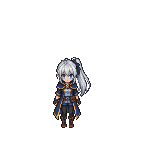
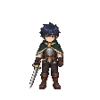
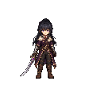
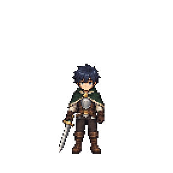

← Về mẫu ghép vũ khí · Kế hoạch admin
Quy chuẩn nét vẽ và chuyển động nhân vật
Quy chuẩn làm việc · 2026-10-27. Các mẫu R3/R4/HD nháp chưa đạt mỹ thuật. Chưa phát hành bộ nhân vật thay thế trong Unity.
Độ nét bắt buộc so trực tiếp hai NPC PixelLab tóc trắng nam/nữ ở sảnh, cùng camera/PPU và kích thước trong game; nhân vật/vũ khí mới tối thiểu không kém. Lục Phong giữ vai trò thiết kế/tỷ lệ, Lam Kiếm/Tử Yên bổ sung vật liệu. Đồ nền tân thủ cơ bản như mẫu kiếm hiện tại; NPC chỉ là chuẩn nét, không là mức xa hoa. Mẫu HD đang thử chưa được coi đạt mốc nét mới.
Ảnh gốc dùng để đối chiếu
NPC tóc trắng ở sảnh · namChuẩn độ nét bắt buộc mới27/10; pixel gốc, cùng PPU48
NPC tóc trắng ở sảnh · nữChuẩn độ nét bắt buộc mới27/10; pixel gốc, cùng PPU48
Lục PhongĐối chiếu thiết kế và tỷ lệ của bộ hiện tạiLam KiếmĐối chiếu nếp đồ, tóc và chất liệu
Tử YênĐối chiếu độ tinh của chi tiết và kiếm cong
Thước tỷ lệ cho mẫu HD
Ảnh phóng 2× là thước hình học, chưa phải bản mỹ thuật HD. Bản HD phải có chi tiết được vẽ thực ở lưới pixel mới. PPU tăng cùng mật độ pixel để nhân vật giữ chiều cao trong thế giới game.

| Thuộc tính | Mẫu gốc | Thước HD |
|---|
| Canvas | 144 × 144 | 288 × 288 |
| Root | (72, 128) | (144, 256) |
| Cao cơ thể đứng | 75 px | 150 px |
| PPU | 48 | 96 |
| Thước bề ngang đầu S | 24 px | 48 px |
Đường bao đầu của master theo từng hướng; số 24px chỉ là thước bề ngang hướng S, không đo bằng tóc lộ ra khi kiếm/tay che đầu.
Nét tóc, mặt và giáp của master
NGHIÊM CẤM GHÉP ĐÈ HAI ĐẦU
- NGHIÊM CẤM VẼ/GHÉP ĐÈ ĐẦU NÀY LÊN ĐẦU KHÁC — chỉ thị trực tiếp27/10: thân/bộ đồ và mọi lớp tay/găng/cổ áo phải tách sạch toàn bộ đầu, mặt, tóc, tai, sừng, cổ da cũ TRƯỚC KHI ghép avatar mới. Tắt avatar phải thấy bộ đồ không có đầu, không còn tóc bạc ở hai bên/gáy/khe tay hoặc pixel mặt người. Không chữa bằng phóng avatar/che cổ. Nguồn có đầu chỉ để đối chiếu, không dùng nguyên frame làm lớp thân runtime. Phải rà từng frame/hướng không avatar rồi thử đầu ngắn/nhỏ/Ma tộc trên nền sáng tối. Còn phần đầu cũ thì LOẠI, không đưa game/phát hành/tăng nghiệm thu. Quy tắc đầy đủ: docs/thiet-ke/cam-ghep-de-hai-dau.md.
Hai thân nam/nữ và độ nét đầu — chốt mới
- Chốt mới27/10: giữ thiết kế30 đầu đã được chủ dự án đồng ý (5 tộc, mỗi tộc3 nam+3 nữ,8 hướng), nhưng ĐỘ NÉT CHƯA ĐẠT. Vẽ lại chi tiết tóc/mắt/mặt/viền tại nguồn, so hai NPC PixelLab tóc trắng cùng cỡ game; không sharpen hoặc phóng đầu. Tách thân/bộ NAM và NỮ riêng, cùng chiều cao/khối đầu/PPU/root/neo cổ, khác vai/eo/hông vừa phải. Hai thân thay thế quy tắc thân unisex trước đây. Sửa đầu bị thụt bằng neo cổ/cằm nguyên pixel, không co/phóng ảnh. Cần vẽ đủ bước chân và15 pose bổ kiếm thật cho từng thân, rồi ráp đầu–thân–kiếm với lớp che tay/cổ áo theo frame; chưa nghiệm thu chỉ từ4 key pose. Bộ class kín da, đầu không dính áo, Thú nhân không đuôi.5 class có5 thiết kế đồ cơ bản, mỗi thiết kế có hai dáng nam/nữ và vũ khí tương ứng.
30 đầu đủ8 hướng và Long tộc
- Chốt30 đầu/8 hướng27/10: Nhân tộc, Elf, Ma tộc, Thú nhân, Long tộc; mỗi tộc3 nam+3 nữ khác tóc, tổng30 nguyên đầu và240 hình hướng. Long tộc hình người, sừng nhỏ/vảy thái dương là hướng vẽ thử; Thú nhân không đuôi. Đầu dùng chung mọi bộ class, cùng khối đầu/mốc mặt/cổ, không áo dính cổ. Đủ8 hướng đầu trung tính chưa đồng nghĩa đủ pose đầu theo toàn bộ đòn đánh/chuyển động.
Tân thủ đồ lót và bộ đồ class kín da
- CHỐT HIỆN HÀNH27/10: tạo nhân vật chọn TỘC → ĐẦU, mặc đồ lót tối giản (nam quần, nữ áo+quần), chạy/đi nói chuyện NPC để chọn nghề rồi nhận bộ đồ+vũ khí. Đợt đầu5 class có5 bộ đồ cơ bản+5 vũ khí cơ bản; không còn bộ vải tân thủ riêng. Tháo bộ đồ trở về thân đồ lót, giữ đầu/tộc. Mỗi tộc3 đầu nam+3 đầu nữ khác tóc,5 tộc=30 bộ đầu. Bỏ hạn mức3 bộ/tộc hoặc3 bộ/class và phép nhân72/360 trước đó.
- Ba nhóm tài nguyên: nguyên đầu (mặt+tóc+tai/sừng+cổ DA), thân mặc bộ đồ, vũ khí. Cổ áo/áo choàng thuộc thân, không dính avatar. Hai dáng thân THON NAM/NỮ RIÊNG, cùng chuẩn đầu/root/PPU: vai/eo/chi gọn, giữ chiều cao/khối đầu/neo cổ, không phóng thân nam hoặc thu đầu nữ để chữa ghép sai. Khóa khối đầu/mắt/má/cằm/cổ; chung rig/hướng/pose/PPU/root/neo cổ/lớp che; không scale theo tóc/bộ/frame hoặc dùng một đầu đứng tĩnh cho mọi hoạt động. Đầu mọi tộc ghép chung mọi bộ class; da hở thân/tay khớp da đầu. Thú nhân chỉ phần đầu, KHÔNG ĐUÔI/animation đuôi. Bộ đồ chỉ vẽ đứng/đi/chạy/đánh của class hỗ trợ, không nhân qua5 class. Vũ khí+bộ đồ cùng class/animationFamilyId. Thân trang phục thay nguyên thân đồ lót, không chồng hai bộ. Thân nền đồ lót dùng chung khi chưa có/tháo đồ, cần pose tương thích hành động đang hỗ trợ. Bộ xanh V7 được chọn làm thiết kế cơ bản kiếm sĩ, vẽ lại thon; hai đầu nam hiện có tiếp tục dùng.
- YÊU CẦU KÍN DA mới nhất27/10: bộ class có cổ cao che toàn bộ cổ avatar nhưng không che cằm, tay áo dài/găng kín ngón nối kín, quần/giày kín da; đầu ma tộc/Elf/Thú nhân dùng chung không lộ da người. Cổ áo thuộc thân đồ, đầu chỉ có cổ da; thân nền đồ lót khi tháo đồ mới khớp bảng da theo tộc. Đã vẽ nguồn thân kiếm sĩ thon kín da, ghép hai đầu cũ tại site/media/weapon-proof-v2/player-standard-v7/unisex/index.html; mới đứng S, chưa đủ đi/chém/tám hướng hoặc phát hành.
- Đổi nghề có phí phải đổi đồng bộ class, tẩy phân bổ điểm skill nghề cũ/hoàn điểm để học nghề mới, thay bộ skill/passive, cập nhật thanh chiêu và cặp đồ–vũ khí/animation. Máy chủ kiểm điểm thực/chiêu hợp lệ và giao dịch phí/nghề/skill/đồ đồng bộ, tránh mất phí hoặc còn skill nghề cũ. Loại tiền, mức phí, giới hạn đổi, xử lý đồ cũ và việc tẩy điểm chỉ số cơ thể chưa chốt; không tự đặt phí/loại tiền. Nguyên tố vẫn theo thiên phú cấp10, không tự reroll khi đổi nghề.
Chuẩn khối đầu, cổ da và hợp đồng ghép
- Avatar gồm nguyên đầu và cổ da, không dính áo/cổ áo/áo choàng/trang sức; cổ áo ở thân đồ và có lớp che theo frame.
- Khóa khối đầu, mắt/má/cằm/cổ theo master, không scale theo hộp tóc hoặc theo bộ đồ/hành động. Tóc đổi kiểu quanh cùng khối đầu; không làm mặt to nhỏ khác nhau.
- Một hợp đồng dùng chung hướng/pose/frame/PPU/neo cổ/lớp che và tương thích tộc/dáng/màu da. Không gắn một đầu đứng tĩnh cho mọi hành động; mẫu S V7 mới kiểm hình học, chưa đủ hoạt động/tám hướng hay nghiệm thu nét.
Độ nét bắt buộc theo hai NPC tóc trắng ở sảnh
- Nhân vật và vũ khí mới cần nét hơn bản thử hiện tại, tối thiểu không kém hai NPC tóc trắng nam/nữ PixelLab khi cùng camera/PPU/kích thước và nền map thật.
- Đọc rõ tóc/mái/da đầu, mắt/mặt/cằm, viền/đường may/nếp vải, cạnh/khắc giáp/giày; vũ khí rõ lưỡi/hộ thủ/chuôi và chỗ ngón tay nắm. Giữ nét đó qua đứng/đi/chạy/đánh tám hướng.
- Vẽ chi tiết sạch tại ảnh nguồn; không tăng nhiễu, dùng sharpen/blur/glow hoặc phóng người để giả nét. Chưa đạt thì không nhân rộng72 tổ hợp hoặc tự tăng% mỹ thuật.
Nhịp kiếm15 frame — lấy lực chậm, ra đòn nhanh
- Bộ chém kiếm vẽ lại15 frame, thêm3 pose chuyển tiếp thật so với bản12; không chỉ lặp ảnh hoặc kéo dài nhịp đều.
- Nâng kiếm/lấy lực chậm và có trọng tâm, tăng tốc khi bổ, nhanh nhất gần lúc chạm; nhát chém dứt khoát liền mạch, hồi thế gọn.
- Thời lượng từng frame/đường thời gian không đều; đủ pose nối, tay/vai/thân/kiếm đi cùng động tác, chuôi khớp tay. Không khua cổ tay hoặc để kiếm xoay riêng, không làm nhòe/co phóng người.
- Mốc chạm/sát thương/hiệu ứng khớp pha đánh khi tích hợp đòn thật; soi0,5× và duyệt cảm giác1×. Đây là yêu cầu lượt vẽ kế tiếp, không phải15 frame đã phát hành.
Trang bị nền cơ bản, thời trang đẹp để giai đoạn bán sau
- Giữ mức tân thủ như mẫu kiếm đang làm: áo choàng ngắn đơn sắc, giáp nhẹ vừa đủ, đai da, quần/giày thông dụng, kiếm cơ bản. Tăng nét/cắt may/vật liệu, giữ thiết kế giản dị.
- Hai NPC tóc trắng là chuẩn chất lượng pixel, không bê mức trang trí của NPC vào đồ nền. Không tự thêm vương miện/cánh/aura/giáp hiếm/vàng ngọc hoặc hoa văn cầu kỳ.
- Các bộ nổi bật/cầu kỳ và vũ khí theo cấp dành cho giai đoạn thời trang bán sau; giá, độ hiếm và chỉ số chưa chốt.
Nét vẽ bắt buộc
- Tóc xanh đen được chia thành lọn nhỏ, góc gãy và cụm sáng/tối có chủ đích như ảnh trang chủ; tóc ôm sọ, mái che trán tự nhiên, không thành mũ tròn/phồng, mảng nhựa trơn hoặc gai ngẫu nhiên.
- Mặt giữ mắt, sống mũi gợi nhẹ, cằm và đường tóc của cùng nhân vật. Giữ cùng cỡ đầu qua mọi hành động; nét mắt/mái tóc không đổi thành kiểu chibi khác khi đi hoặc chém.
- Viền dùng màu tối của từng vật liệu, mảnh và có chọn lọc. Giữ các cụm pixel sắc ở kích thước gốc; tránh viền đen dày, mảng màu phẳng và bóng nhựa như các bản R4 bị góp ý.
- Giáp có cạnh, mảng kim loại sáng/tối và chi tiết khắc nhỏ đọc được; đai da có khóa, mép và đường may; quần có nếp và đường ghép; giày có cổ, dây/đai và đế. Chi tiết đi theo cấu trúc đồ, không rải hạt nhiễu lên bề mặt.
- Áo choàng xanh rừng có nếp vải, lớp trong và viền ngà mảnh. Giữ thiết kế cổ áo, đai và trang phục gốc; không tự thay bằng cúc vàng lớn hoặc bộ đồ đơn giản khác.
- Độ giàu chi tiết ít nhất bằng roster trang chủ. Có thể vẽ ở mật độ pixel cao hơn, nhưng ảnh gốc phải thật sự có nét mới; tăng zoom, sharpen, tương phản hoặc đổi viền không được tính là vẽ chi tiết hơn.
- Cùng hướng sáng, bảng màu vật liệu, độ dày viền và cỡ cụm pixel cho cả đứng, đi/chạy và chém. Tránh ép bảng màu quá ít khiến đồ bị bệt hoặc dùng nền ảnh khác làm đổi chất liệu.
Tỷ lệ và nét khi chuyển động
- Lấy cùng một master hoàn chỉnh liền tóc/mặt/thân làm nguồn chuẩn. Đối chiếu đúng hướng S/E/N...; đầu quay ngang được so với master ngang, không ép theo bề ngang đầu chính diện.
- Khóa độ dài thân, bề ngang vai/eo, chiều dài và độ dày tay/chân, cỡ đầu và giày. Một canvas, root, tỷ lệ xuất và PPU cho toàn bộ bộ chuyển động; không fit người theo bounds có cả kiếm/tay/áo choàng.
- Đứng, đi và chém giữ cùng tỷ lệ pixel. Đầu nhấp nhô do bước chân hoặc thân hạ do gập gối là thay đổi tư thế; đầu, mặt, giáp, bàn chân vẫn giữ kích thước và mật độ nét.
- Ảnh sinh sai giải phẫu hoặc đổi camera phải bị loại/sửa ở nguồn. Không chữa bằng kéo riêng đầu, co từng frame hoặc phóng mỗi hành động để vừa khung.
- Giữ đủ khoảng trống trên đầu và hai bên cho vũ khí. Không để kiếm chạm nhân vật ở ô bên cạnh; ảnh nguồn chồng ô phải bị loại trước khi tách.
- Kiểm lần lượt từng frame ở 1× và 2×, rồi phát nhịp chậm/bình thường. So cùng camera, cùng mức phóng, cùng nền và đường chân; rà cả nét, đầu/eo/chân và đoạn nối về đứng.
Kiếm riêng, nhân vật vẫn liền
- Tóc, mặt, thân và quần áo vẫn xuất thành một frame nhân vật hoàn chỉnh. Chỉ tách vũ khí và phần ngón tay che chuôi cần thiết cho thay kiếm.
- Mỗi frame lưu điểm nắm nguyên pixel, trục chuôi, góc kiếm và thứ tự che. Cùng tay cầm chính; chuôi đi dưới các ngón, hộ thủ ở trước nắm tay, đuôi chuôi về sau/dưới tay.
- Hai tư thế giữ kiếm cao trước nhát bổ S: hai tay nắm cùng chuôi phía trên đầu; trục chuôi/lưỡi dựng thẳng lên, không nghiêng sang phải. Lưỡi cong Tử Yên giữ hình cong riêng nhưng trục cầm vẫn dựng đúng.
- Đoạn chém thay đổi góc theo động tác vai–khuỷu–cổ tay một cách liên tục; kiếm là vật cứng, không xoay độc lập khỏi nắm tay. Giữ đúng bàn tay che chuôi sau khi thay vũ khí.
- Vũ khí mới dùng cùng chuẩn native/PPU của bộ nhân vật. Nếu nâng mật độ 2×, nâng chuẩn vũ khí cùng một hệ số cố định cho cả bộ; không đổi kích thước kiếm theo từng frame.
- Phải tái ghép kiếm gốc từ các lớp độc lập để so với bản vẽ liền, rồi thử kiếm thay thế. Kiểm trùng pixel chỉ chứng minh ghép lớp đúng, không chứng nhận tư thế, nét vẽ hoặc tỷ lệ đã đẹp.
Trước mỗi lượt sinh ảnh
- Đọc chuẩn này; gắn ảnh master gốc, hướng tương ứng và thước tư thế vào prompt. Ghi rõ vai trò từng ảnh: chuẩn style/nhân dạng, chuẩn tỷ lệ, mẫu động tác.
- Chốt một mẫu đứng HD có nét/tỷ lệ đạt trước khi nhân rộng. Mỗi lượt thử ban đầu tối đa 4 pose để soi mắt, tóc, giáp, tay nắm và cỡ pixel; tránh sinh cả 24 frame hoặc 72 tổ hợp đầu–đồ khi style còn sai.
- Prompt phải nhắc cụ thể nét tóc, mặt, viền, kim loại, da thuộc, vải, giày và mật độ chi tiết. Không chỉ dùng các từ chung như đẹp hơn, pixel art hay giống PixelLab.
- Rà cả hình gốc và hình xuất native. Nếu không đạt style hoặc tỷ lệ, ghi lý do loại; không đưa vào bộ mẫu đã chốt và không tăng % mỹ thuật.
- Lưu prompt, ảnh tham chiếu/hash, phiên bản nguồn, chuẩn canvas/root/PPU và kết quả rà cùng asset. Giữ nguyên mẫu cũ đã chốt để đối chiếu/lùi lại.
Các bản chưa được dùng làm chuẩn
- attack-r3: Vá riêng chuỗi bổ vẫn khác tỷ lệ/nét với đứng; không dùng làm chuẩn.
- family-r4: Cùng nguồn và ghép kiếm kỹ thuật được, nhưng nét quá đơn giản, thiếu chi tiết so với trang chủ; bị chủ dự án chê xấu.
- family-hd-r5: Các ảnh HD nháp chưa đạt nét; tư thế giơ kiếm chỉ là sửa hướng động tác, không phải nghiệm thu style.
Tài liệu và prompt dùng lại
Chuẩn đầu GLOBAL
HEAD_STANDARD là nguồn global duy nhất. Khối mặt đồng nhất theo má/cằm; không đo bằng tóc/tai/sừng. Chuẩn hóa từ nguồn một lần, runtime không offset/scale từng đầu. docs/thiet-ke/quy-chuan-dau-global.md.
{
"id": "aether-head-96-v1",
"version": 1,
"canvas": [
96,
96
],
"ppu": 96,
"chin": [
48,
65
],
"neck": [
48,
66
],
"cheekWidth": 20,
"cheekWidthTolerance": 1,
"eyeToChinRange": [
9,
13
],
"bareNeckMaxPixels": 2,
"lastVisibleRow": 67,
"bodySocket": [
144,
154
],
"bodyRoot": [
144,
256
],
"bodyCanvas": [
288,
288
],
"runtimeScale": 1,
"perHeadRuntimeOffset": false,
"perHeadRuntimeScale": false,
"sampling": "nearest-from-original-source-once",
"measurement": "anatomical-cheeks-and-jaw-not-hair-ears-horns-or-alpha-bounds",
"reviewedDirections": [
"S"
],
"otherDirections": "Cùng mật độ từ S; neo hướng cũ chưa nghiệm thu ghép thân8 hướng."
}Kiểm30 đầu cùng thước trong game